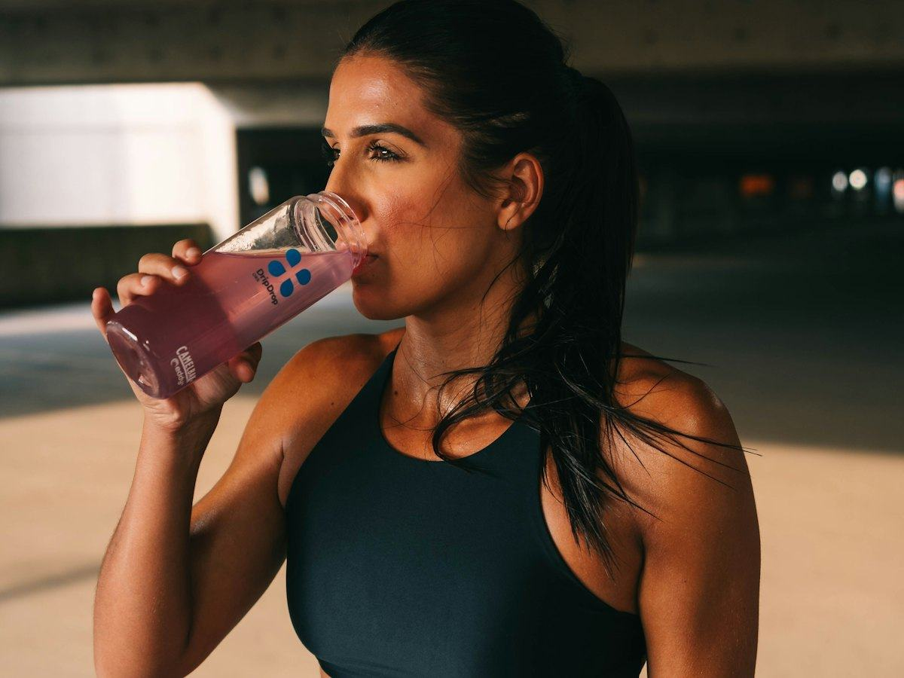
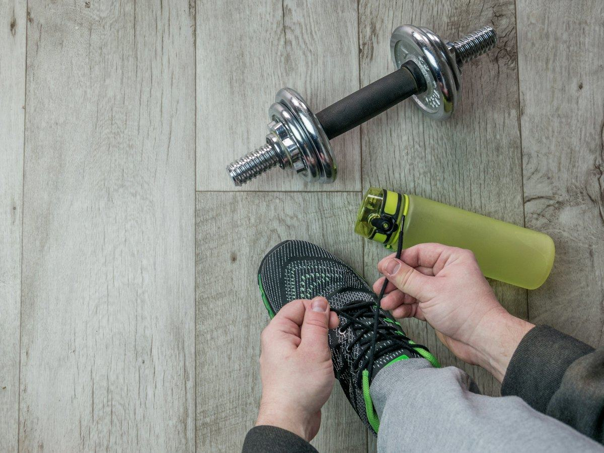

Hidratación
¿Cuánta agua hay que beber al día? Lo que dice la EFSA
Cuánta agua necesitas al día según la Autoridad Europea de Seguridad Alimentaria (EFSA), cuánta viene de la comida y cómo saber si bebes suficiente.
 Por el equipo editorial de Pombo AI
Por el equipo editorial de Pombo AI
12 nov 2026 · 5 min de lectura

Las bebidas deportivas se venden como imprescindibles, pero no siempre hacen falta. La clave está en cuánto dura y lo intenso que es tu entrenamiento.
En sesiones de gimnasio, carrera suave o deportes de menos de una hora a intensidad moderada, el agua suele ser suficiente. Las bebidas especializadas normalmente no son necesarias, salvo que entrenes con mucho calor o humedad.

Una revisión publicada en PubMed sobre líquidos y rendimiento en resistencia indica que, en ejercicio intenso de más de una hora, conviene tomar entre 30 y 60 g de hidratos por hora y beber entre 600 y 1.200 mL por hora de una bebida con hidratos y sodio (0,5 a 0,7 g por litro).
La mala hidratación y la falta de hidratos son las dos causas más frecuentes de fatiga durante el ejercicio, según Consumer. Por eso estas bebidas combinan agua, azúcares y electrolitos.
Con el sudor se pierden sales, sobre todo sodio. Consumer explica que el sodio es el electrolito más importante de una bebida deportiva y el único que aporta beneficios cuando se toma durante el ejercicio. En sesiones largas también ayuda a evitar beber solo agua en exceso, que puede bajar el sodio en sangre.
Para las cantidades antes, durante y después de entrenar, lee hidratación y ejercicio.
En la mayoría de sesiones de menos de una hora, el agua es suficiente. Las bebidas con hidratos y sodio tienen más sentido en ejercicio intenso de más de una hora o con mucho calor.
Hidratos de carbono para dar energía y sodio, que es el electrolito que más se pierde con el sudor.
Aviso: Este artículo es informativo y no sustituye el consejo de un médico o dietista-nutricionista. Si tienes una enfermedad, tomas medicación, estás embarazada o has tenido un trastorno de la conducta alimentaria, consulta con un profesional antes de cambiar tu alimentación.
Cuánta agua necesitas al día según la Autoridad Europea de Seguridad Alimentaria (EFSA), cuánta viene de la comida y cómo saber si bebes suficiente.
Cómo entrenar con calor sin riesgos: recomendaciones del Ministerio de Sanidad, síntomas del golpe de calor y qué hacer ante calambres o mareos.
Guía práctica basada en el consenso del American College of Sports Medicine: pérdida de peso por sudor, cantidades orientativas y riesgos de beber de menos o de más.